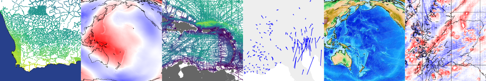

Ensaio
Practice datasets to probe your code
Ensaio (Portuguese for “rehearsal”) is a Python package for downloading open-access sample datasets for Geoscience. It taps into the Fatiando a Terra FAIR data collection that is designed for use in tutorials, documentation, and teaching.
It uses Pooch to manage downloading and caching the data on your computer. This means that datasets are only downloaded if they can’t be found on your computer already.
See also
Ensaio is a part of the Fatiando a Terra project.